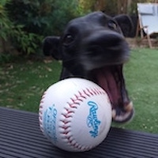

A bit about me, Lucy Adams...

- Mancunian (Salfordian!), living in Sale, Greater Manchester.
- Man Utd fan and general football enthusiast.
- Communications career, currently working at the General Medical Council.
- Dog lover with two pet whippets, Penny and Eric - lots of walking/sofa sleeping.

I also like to travel, grow fruit and veg, swim, watch films...